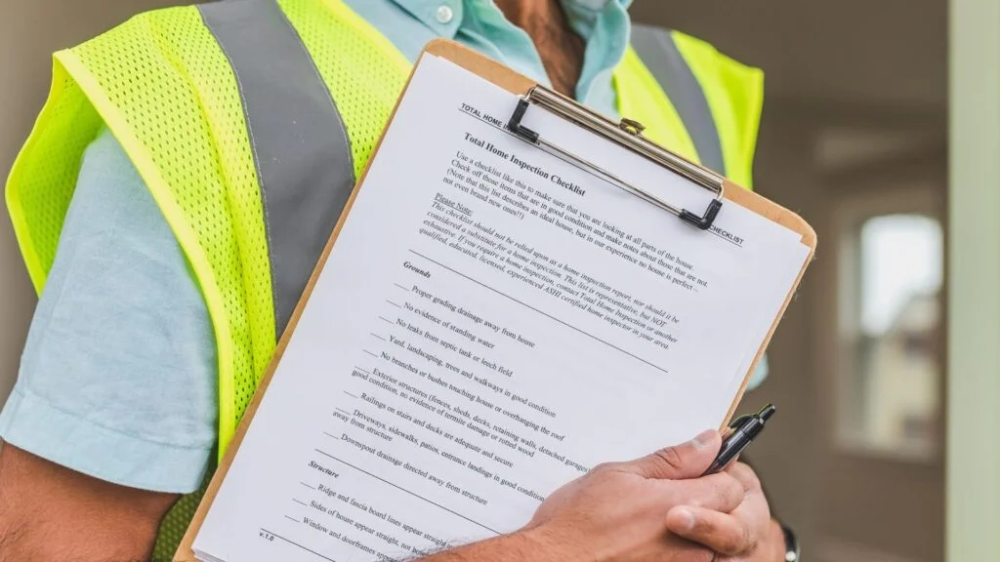
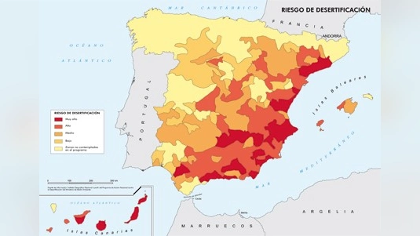

1. Qué es el estudio de viabilidad
El estudio técnico de viabilidad del terreno es un informe profesional elaborado por un arquitecto técnico o aparejador colegiado que responde a dos preguntas fundamentales antes de que empiece cualquier obra:
Analiza la clasificación del suelo, la normativa del cabildo y del ayuntamiento, los usos permitidos, la edificabilidad máxima, las distancias a linderos y cualquier condicionante legal que afecte a la parcela. Sin luz verde en este punto, ningún otro análisis tiene sentido.
Determina el tipo de suelo, su capacidad portante, la profundidad a la que se debe cimentar y si existen riesgos geológicos: cavidades volcánicas, suelo expansivo, nivel freático alto o inestabilidad sísmica. En Canarias, con su geología volcánica, este análisis es especialmente crítico.
Sin este documento en mano, ninguna constructora puede darte un presupuesto real ni garantizado. Lo que te ofrezca será una estimación genérica que puede desviarse miles de euros en cuanto se empiece a excavar. El estudio de viabilidad es el punto de partida de todo proyecto serio.

2. Por qué es obligatorio
El estudio de viabilidad no es un capricho ni un trámite opcional. Es un requisito que desbloquea todos los pasos siguientes del proyecto:
- Requisito previo al proyecto técnico del arquitecto. Ningún arquitecto redactará el proyecto de construcción sin saber antes si el terreno lo permite legal y físicamente. Hacerlo sería malpractice profesional.
- El banco no concede hipoteca autopromotor sin él. Las entidades financieras exigen viabilidad técnica acreditada antes de aprobar financiación. Sin el informe, el préstamo autopromotor queda bloqueado desde el principio.
- La constructora no puede calcular la cimentación. El tipo y coste de la cimentación depende directamente de los resultados del estudio geotécnico. Sin esos datos, cualquier presupuesto de obra es una estimación sin respaldo técnico.
- El suelo volcánico canario tiene particularidades únicas. Canarias es un archipiélago de origen volcánico con suelos de basalto, picón, malpaís y lava reciente. Estas formaciones tienen comportamientos muy distintos al suelo peninsular y exigen análisis específico. Un estudio realizado en Madrid no sirve en Lanzarote.
Casos reales de problemas por saltarse el estudio
Para entender el marco legal completo de permisos en Canarias, consulta nuestra guía completa de permisos y normativa →
Te conectamos con un arquitecto técnico en tu isla.
3. Qué incluye exactamente
Un estudio técnico de viabilidad completo en Canarias contiene los siguientes apartados:
4. Cuánto cuesta + truco
Un estudio de viabilidad completo en Canarias tiene un coste orientativo de entre 2.000€ y 4.000€. El precio varía según la isla, la distancia del arquitecto al terreno, la accesibilidad de la parcela y si el suelo requiere ensayos de laboratorio adicionales. La única forma de saber el coste exacto de tu caso es pedir presupuesto directamente a un arquitecto técnico.
2.000-4.000€ puede parecer mucho antes de empezar. Pero ponlo en perspectiva: estás a punto de invertir entre 150.000€ y 300.000€ en construir tu casa.
El estudio de viabilidad es el documento que garantiza que esa inversión no se va a perder por una cimentación incorrecta, un terreno no edificable o una normativa que nadie revisó.
Los errores que detecta cuestan entre 5 y 50 veces más que el propio estudio:
- Cimentación incorrecta por suelo volcánico no analizado: 10.000 – 40.000€
- Construcción en suelo no edificable: demolición total y multa de hasta 60.000€
- Rechazo de hipoteca autopromotor por falta de documentación técnica: meses de retraso y costes adicionales
Dicho de otra forma: el estudio de viabilidad es el seguro más barato de toda tu obra.
Antes de encargar y pagar un estudio geotécnico, pregunta siempre al vendedor o propietario actual del terreno si ya dispone de uno.
Es habitual que terrenos que han cambiado de manos o en los que se tramitaron licencias anteriormente ya cuenten con un estudio geotécnico previo. En muchos casos ese documento sigue siendo válido y puede ahorrarte entre 350€ y 800€.
También puedes consultar al ayuntamiento o cabildo de tu isla — en zonas con obras públicas recientes o en urbanizaciones consolidadas pueden existir estudios zonales de acceso público. En La Palma, tras la erupción de 2021, el Cabildo encargó estudios geotécnicos de muchas zonas que son de acceso público.
Importante: el arquitecto técnico debe validar siempre que el estudio previo es aplicable a tu proyecto concreto antes de darlo por válido.
Te conectamos con un arquitecto técnico en tu isla.
Una vez lo tengas, podrás solicitar presupuesto gratuito a constructoras verificadas en Canarias. Para ver el coste total de un proyecto completo, consulta nuestra guía de precios de casas prefabricadas en Canarias →
5. Cuánto tarda
El proceso completo del estudio de viabilidad se divide en tres fases:
Factores que alargan el plazo
- Zonas protegidas: Requieren consulta adicional a organismos medioambientales, lo que puede añadir 1-2 semanas.
- Suelo volcánico complejo: Las muestras de basalto compacto o malpaís requieren análisis de laboratorio más extensos.
- Islas menores (La Gomera, El Hierro): La logística interinsular para el desplazamiento del técnico puede añadir 3-5 días al proceso total.
- Verano (julio-agosto): Los laboratorios y técnicos tienen mayor carga de trabajo, lo que puede retrasar la entrega.
6. Diferencias por isla
Cada isla tiene una geología específica que condiciona el tipo y complejidad del estudio. Esta tabla resume las peculiaridades más relevantes:
| Isla | Tipo de suelo predominante | Riesgos específicos | Dificultad del estudio |
|---|---|---|---|
| Gran Canaria | Volcánico compactado, relativamente estable | Norte: pendientes pronunciadas. Sur: suelo arenoso costero | Media |
| Tenerife | Basalto y lapilli, muy heterogéneo | Zonas de riesgo volcánico activo. Norte vs sur muy distinto | Media-Alta |
| Lanzarote | Picón, malpaís, campos de lava | Zonas protegidas UNESCO. Suelo poroso con baja capacidad portante | Media-Alta |
| Fuerteventura | Sedimentario y arenoso en zonas costeras | Suelo arenoso con baja capacidad portante en costa | Media |
| La Palma | Lava reciente (post-erupción 2021 en zonas afectadas) | Análisis sísmico obligatorio. Zonas de lava de 2021 muy inestables | Alta |
| La Gomera | Terrenos escarpados con fuerte erosión | Riesgo de deslizamiento en laderas. Acceso complicado | Media-Alta |
| El Hierro | Suelo volcánico joven, poroso | Inestabilidad en zonas costeras bajas. Actividad sísmica residual | Media-Alta |
Si tu terreno está en suelo rústico, el estudio de viabilidad es aún más crítico. Lee nuestra guía sobre construcción en suelo rústico → para entender todos los condicionantes adicionales que aplican.

7. Estudio geotécnico vs estudio urbanístico
Es uno de los puntos que más confusión genera entre los propietarios. Aunque ambos forman parte del estudio de viabilidad, son análisis distintos que responden a preguntas diferentes:
Analiza el planeamiento urbanístico vigente: PGOU municipal, Plan Insular del Cabildo, normativa de zona y posibles afecciones legales. Responde a: ¿Puedo construir aquí? ¿Qué uso está permitido? ¿Cuántos metros puedo edificar? ¿Qué altura máxima tengo?
- Se realiza con documentación administrativa (catastro, GRAFCAN, PGOU)
- No requiere visita al terreno obligatoriamente
- Resultado: informe jurídico-urbanístico
Analiza las características físicas y mecánicas del terreno: tipo de suelo, capacidad portante, profundidad de roca firme, nivel freático y riesgos geológicos. Responde a: ¿Qué tipo de cimentación necesito? ¿A qué profundidad? ¿Cuánto costará?
- Requiere visita presencial y toma de muestras in situ
- Las muestras se analizan en laboratorio geotécnico
- Resultado: informe geotécnico con capacidad portante y recomendaciones
¿Por qué necesitas AMBOS antes de construir?
Porque son complementarios y se corrigen mutuamente. Puedes tener un terreno urbanísticamente perfecto (suelo urbano, usos permitidos, normativa favorable) pero con un suelo tan inestable que la cimentación dispare el coste del proyecto un 40%. O al contrario: un suelo geológicamente excelente en una zona donde legalmente no puedes construir nada.
¿Cuál se hace primero?
El estudio urbanístico siempre va primero. Si el análisis legal concluye que no puedes construir en esa parcela, no tiene sentido gastar dinero en el análisis geotécnico. El orden correcto es:
8. Preguntas frecuentes
Sí. Sin él la constructora no puede calcular la cimentación ni darte un presupuesto real garantizado. Es además requisito previo al proyecto técnico del arquitecto y condición para que el banco conceda una hipoteca autopromotor.
Entre 350€ y 1.200€ según la isla y complejidad del terreno. No es gratuito, pero es imprescindible antes de cualquier otro gasto en el proyecto. Las islas menores tienen precios más altos por la logística interinsular.
No. Debe realizarlo un arquitecto técnico o aparejador colegiado. Sin firma de profesional colegiado no tiene validez legal y ninguna administración lo aceptará como documento técnico oficial.
Riesgo de cimentación incorrecta, posible demolición, pérdida de la inversión y multas de hasta 60.000€. En Canarias, el suelo volcánico tiene particularidades que hacen especialmente peligroso saltarse este paso.
Entre 1 y 3 semanas desde la visita al terreno, dependiendo de la isla y complejidad. La visita al terreno tarda 1 día y el análisis y redacción del informe entre 5 y 15 días laborables.